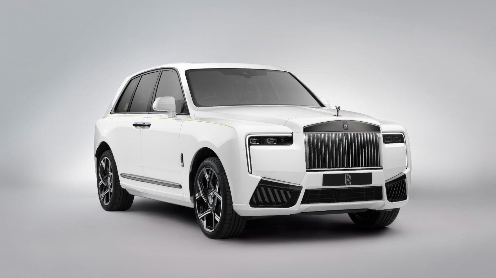
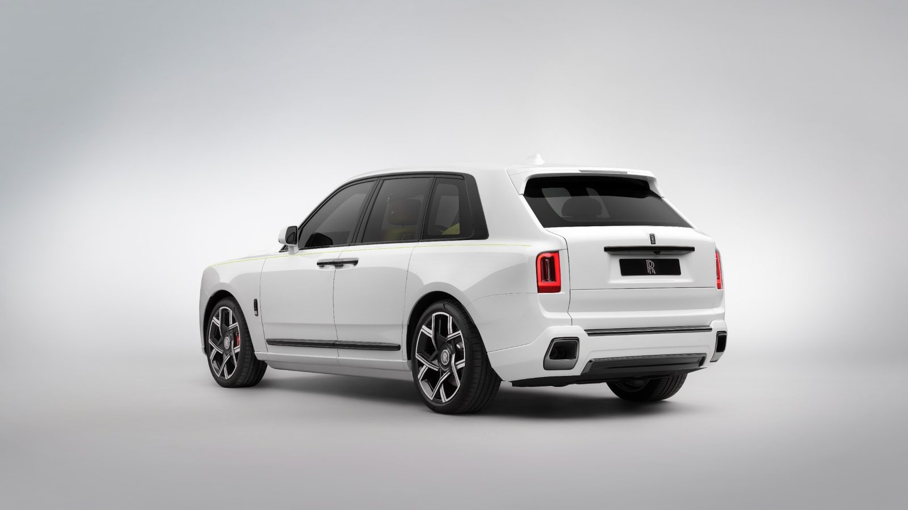
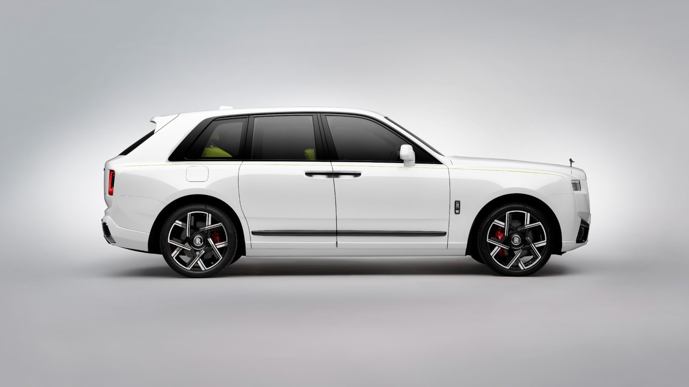
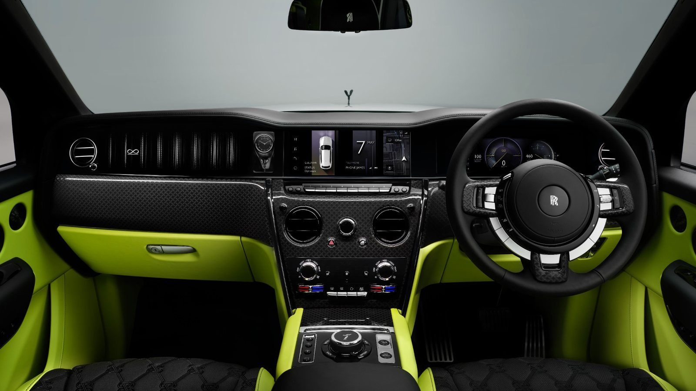
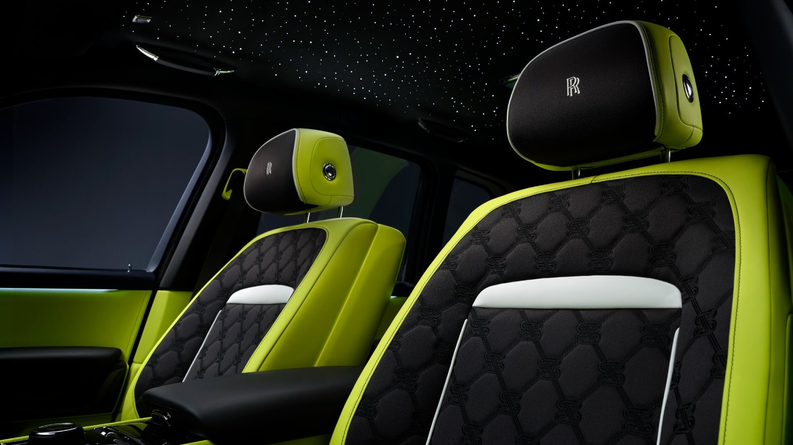

Rolls-Royce Cullinan Black Badge

Описание
Роскошный внедорожник с просторным салоном и необычной отделкой.
Характеристики
- Год выпуска: 2024
- Пробег: 2 000 км
- Кузов: внедорожник
Цена: 70 000 000 ₽
Другие фотографии



